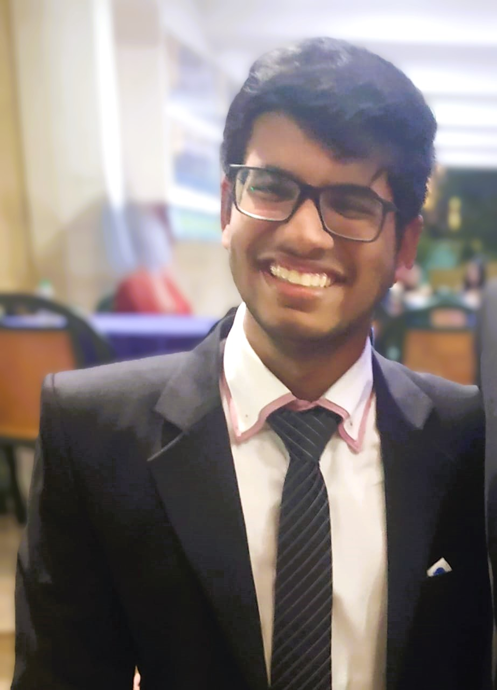

Personal Profile
I am currently studying computer science at an undergraduate level in UC Davis. I am deeply interested in Physics and Computer Science. I love Coding and have learnt several Computer Languages such as Python, Java & C++. I am also familiar with several different types of AI algorithms as well as advanced data structures. I am also familiar with Kali Linux and have the knowledge to use basic ethical hacking libraries. I am also the leader of my school's coding club.
Education
| Place | Date |
|---|---|
| The Cathedral and John Connon School, Mumbai | 2011 - 2022 |
| Dhirubai Ambani International School, Mumbai | 2022 - 2024 |
| University of California, Davis | 2024 - 2028 |
Skills
- Experience in Python, Java and C++
- Know how to use Linux
- AI and machine learning
- Speaks English, Hindi and Spanish
- Leadership Skills
- Analytical Thinking
- Quick Learner
Past Experiences
| Experience | Date (Year) |
|---|---|
| Coding Internship at Axis Bank | 2022 |
| Coding Internship at Cyware Labs | 2022 |
| Coding Internship at Rubik's Data Science | 2023 |
| Participated in FRC tournament | 2023 |
| Built several coding projects | 2020 onwards |
Coding Projects
- Voice enabled AI virtual assistant
- Hand tracker/Computer vision project
- Zoom meeting login automator
- AI picture classifier to identify recyclable and organic items (with GUI)
- NLP research project
- Web scraper
Additional Hobbies and Interests
- Participating in Model United Nations (MUN)
- Adventure Sports (Swimming, Scuba Diving & Skiing)
- Reading
- Researching/Learning Science, Programming and Hacking concepts
- Speech and Drama
- Playing the Keyboard